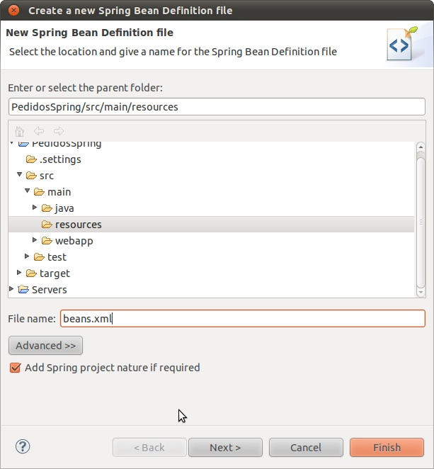

Ejercicios del contenedor de beans de Spring
Configuración del proyecto
- En las plantillas de la sesión hay un proyecto Spring ya creado que usa Maven. Para importarlo en STS usar (como siempre) File > Import... > Existing Maven Projects. En el "pom.xml" se incluye una dependencia del módulo "spring-context" porque éste, a su vez, depende del resto de módulos básicos de Spring, que así Maven incluirá automáticamente. Además, para poder instanciar beans desde la capa web necesitamos el módulo "spring-web".
- Lo primero que vamos a hacer es Crear el fichero XML de configuración de Spring. La localización del fichero es libre, pero nosotros vamos a colocarlo en la carpeta "src/main/resources". Hacer clic con botón derecho sobre esta carpeta, y en el menú contextual, seleccionar "New > Spring Bean Configuration File". Darle como nombre "beans.xml". Asegurarse de que está marcada la casilla de "Add Spring Project Nature if required", que
activará el soporte de Spring para el proyecto. No pulsar sobre Finish, sino sobre Next, para poder ir
al siguiente paso del asistente.

En el segundo paso marcamos los espacios de nombres que necesitamos: "context", "jee" y "p".
- Ahora tenemos que referenciar el fichero de configuración de Spring en el web.xml (recordad que está en src/main/webapp/WEB-INF), para que Spring arranque cuando arranque la aplicación web. Introduciremos en el web.xml el siguiente código:
<context-param> <param-name>contextConfigLocation</param-name> <param-value>classpath:beans.xml</param-value> </context-param> <listener> <listener-class> org.springframework.web.context.ContextLoaderListener </listener-class> </listener>
Vamos a hacer una pequeña aplicación con acceso a base de datos, por lo que tenemos que preparar la conexión y la propia base de datos:
- Asegurarse de que el .jar con el driver de mysql está en el directorio "lib" de Tomcat (/opt/apache-tomcat-7.0.29/lib). Si no lo está, copiarlo allí (se incluye en las plantillas de la sesión).
- Recuerda que en Tomcat la configuración del DataSource se hace en el context.xml (en src/main/webapp/META-INF). Este archivo ya está creado, no tienes que modificar nada.
- Crear la propia base de datos: en las plantillas de la sesión se incluye un script SQL con la base de datos. Se puede ejecutar con el programa "MySQL Query Browser" o bien desde un terminal con la orden
(nos pedirá el password de root de mysql) mysql -u root -p < pedidos.sql
Estructura de la aplicación
La aplicación servirá para hacer pedidos de productos, funcionando según las siguientes reglas:
- La capa de negocio debe chequear que el número de unidades pedidas no supere un cierto límite. Si lo hace, el pedido no se puede procesar automáticamente, por lo que se genera una excepción.
- En la capa de acceso a datos cuando se haga un pedido correctamente se insertará la información en la tabla "pedidos".
En la figura anterior se muestra el diagrama UML de la aplicación
Crear la capa de negocio (1 punto)
Vamos a empezar por crear la capa de negocio, aunque de momento no funcionará del todo al faltar el DAO.
- Crear el interfaz IPedidosBO y la clase que lo implementa PedidosBOSimple
en el paquete es.ua.jtech.spring.negocio. Usad como guía el diagrama UML para ver la signatura de los métodos.
- Por el momento no hay DAO, así que no es necesario que definas el campo "pdao" del objeto.
- Define el campo "cantidadMaxima" como static con un valor de 50.
- Define un constructor y en él simplemente imprime un mensaje en la consola. Así podrás ver el momento en que Spring crea el bean y si lo crea más de una vez.
- Implementa el método "insertarPedido": debe comprobar que la cantidad pedida no supera "cantidadMaxima". Si se supera, se lanzará una PedidosException (ya incluida en la plantilla). En caso contrario se llamaría al DAO, pero esta parte todavía no la vamos a hacer, simplemente si no se supera la cantidad máxima imprime un mensaje en la consola con "Pedido realizado".
- Convertir la clase PedidosBOSimple en un bean de Spring añadiéndole la anotación @Service.
- Modificar el fichero de configuración XML de Spring (beans.xml) para que busque las anotaciones Spring en el paquete
que queremos, y en sus subpaquetes (es decir, en es.ua.jtech.spring). Recuerda que se usa la etiqueta <context-component-scan/>.
Ayudas del STSUsa el autocompletar de STS siempre que puedas, por ejemplo en el valor del atributo "base-package", para no tener que teclear manualmente el nombre del paquete y no cometer errores. Es posible que tengas que introducir la primera letra del nombre del paquete para que el autocompletar funcione.
- En el servlet HacerPedido del paquete es.ua.jtech.spring.web hay que obtener un bean de tipo IPedidosBO y llamar al método insertarPedido con los valores de idCliente, idProducto y unidades.
- Comprueba que cada vez que insertas un pedido de menos de 50 unidades el servlet muestra el mensaje, y que cuando se piden más salta la excepción. Finalmente comprueba que Spring solo crea una instancia del bean (solo se llama una vez al constructor), aunque obtengas varias veces el bean haciendo varios pedidos. Esto sucede porque usamos el ámbito por defecto, o sea "singleton". Además la creación se hace por defecto cuando se arranca el contenedor de Spring, no cuando se hace el primer pedido.
Crear la capa de acceso a datos y enlazarla con la de negocio (1.5 puntos)
- en el "beans.xml", configura el Datasource para acceder a la BD con Spring. Consulta los apuntes o transparencias para ver el uso de la etiqueta "jee:jndi-lookup". El id que le des al bean es indiferente si luego usas @Autowired para acceder a él.
- Crea el interface IPedidosDAO y la clase PedidosDAOJDBC en el paquete es.ua.jtech.spring.datos.
- Debes convertir la clase PedidosDAOJDBC en un bean de Spring anotándola con @Repository
- Anota la variable miembro ds con @Autowired para que Spring busque el DataSource en el "beans.xml".
- El codigo del método insertarPedido de PedidosDAOJDBC lo podéis tomar de las plantillas de la sesión para ahorrar tiempo
- Modifica el PedidoBOSimple para que haga uso del DAO
- Debes definir en PedidoBOSimple un campo
de tipo IPedidosDAO y anotarlo con @Autowired, para que Spring resuelva e instancie automáticamente la dependencia
@Autowired IPedidosDAO pdao;
- Haz uso de este DAO en el insertarPedido. Es decir, el gestor de pedidos debe hacer uso del objeto "pdao" para insertar el pedido en la BD. Aunque el DAO devuelve el id del pedido, por el momento no es necesario que hagas nada con él. No hagas un new() para inicializar "pdao". Si todo está correctamente configurado Spring inicializará esta variable, ya que la has marcado con @Autowired.
- Debes definir en PedidoBOSimple un campo
de tipo IPedidosDAO y anotarlo con @Autowired, para que Spring resuelva e instancie automáticamente la dependencia
- Finalmente, comprueba que ahora cuando haces un pedido a través del servlet HacerPedido éste se inserta en la base de datos.
Configurar beans en el XML (0.5 puntos)
Tal y como está el código de PedidoBOSimple, hay que cambiar el código fuente para cambiar la cantidad máxima de unidades por pedido (50). Es mucho mejor usar Spring para externalizar este valor a través del "beans.xml" y poder cambiar la cantidad sin recompilar el código. El problema es que entonces la anotación @Service de PedidoBOSimple debe ser sustituida por una configuración completa del bean en el XML.
- Comenta la anotación @Service de PedidoBOSimple.
- Usando la etiqueta "bean", configura en el "beans.xml" un bean de la clase PedidoBOSimple. Cuidado: debes poner el nombre completo de la clase, incluyendo "packages".
- Consulta los apuntes o transparencias para ver cómo fijar en el XML el valor de la propiedad "cantidadMaxima".
- Comprueba que se inicializa la propiedad correctamente imprimiendo un mensaje desde el método "setCantidadMaxima", al que Spring llamará automáticamente para darle valor a la propiedad.